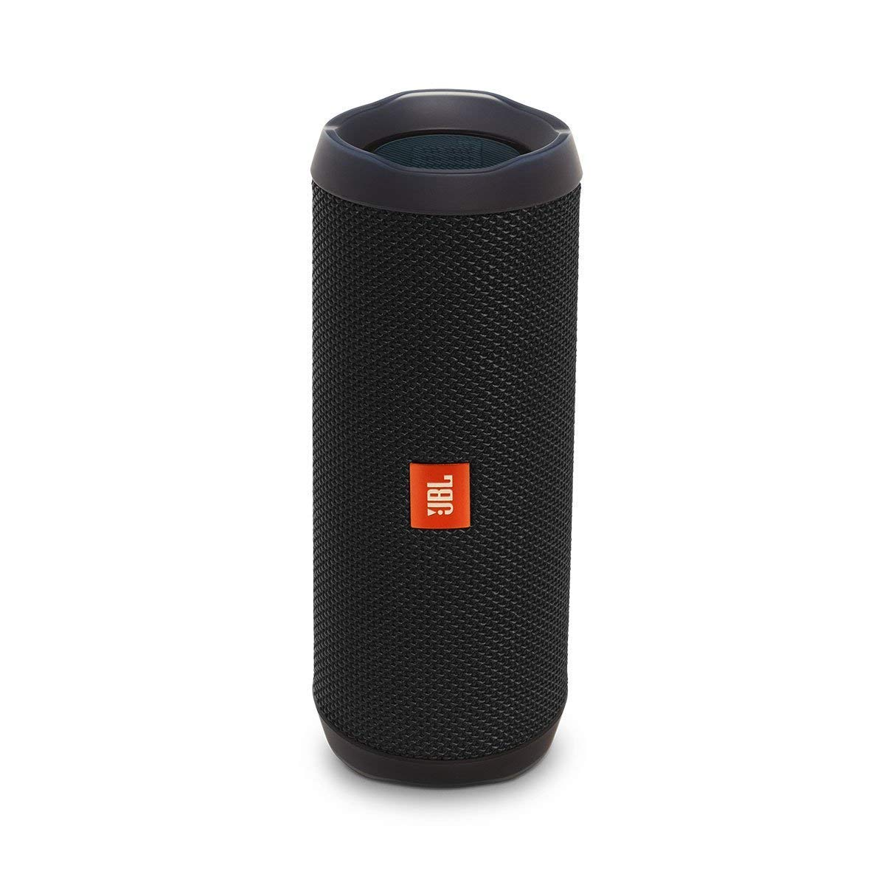
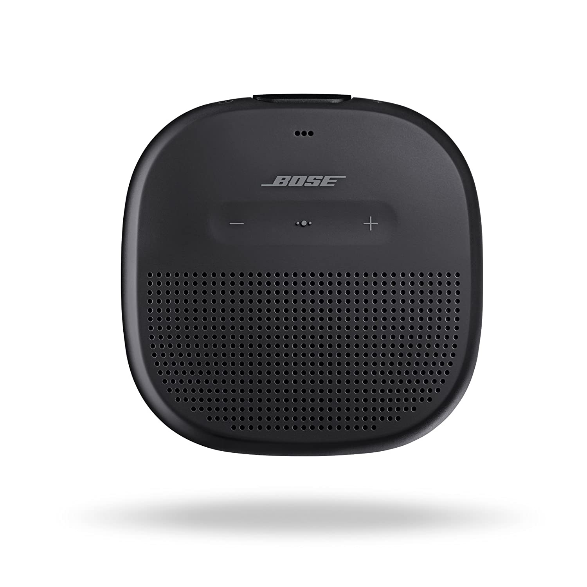
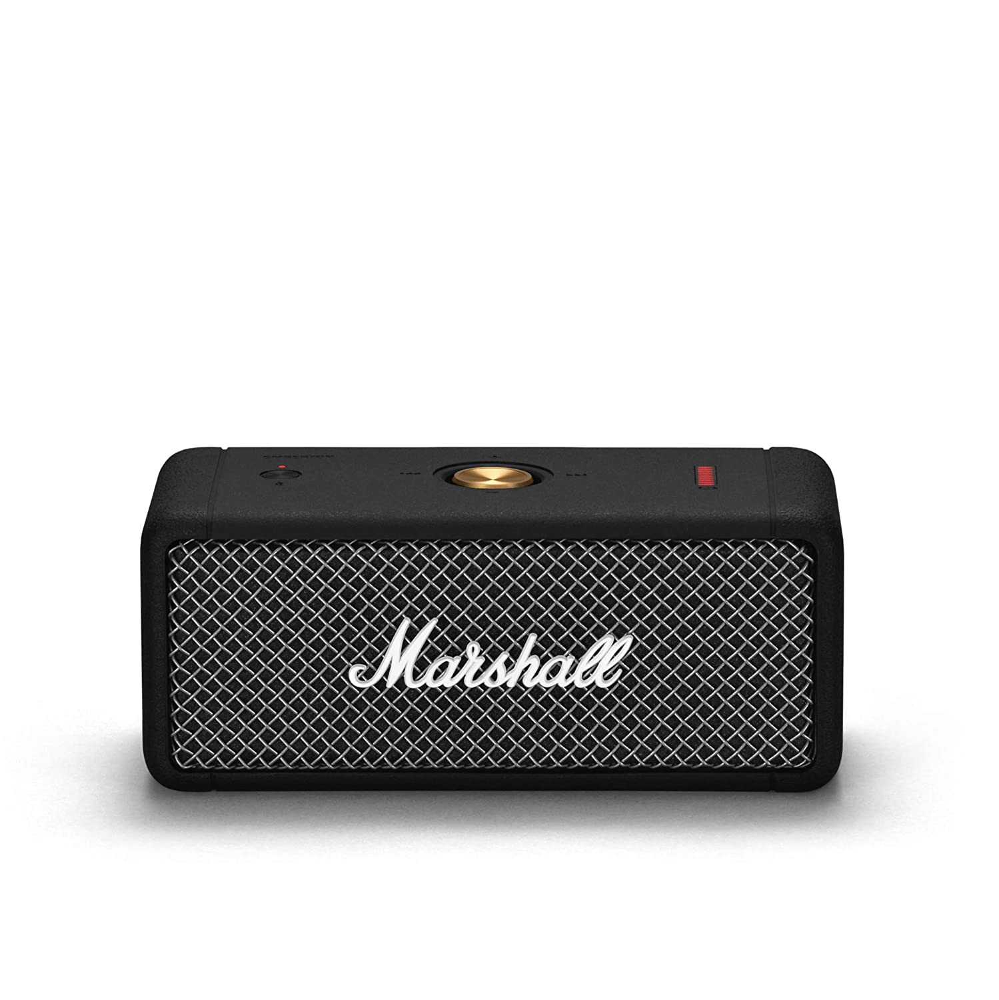

|  |
JBL Flip 4 Portable Wireless Speaker with Powerful Bass & Mic (Black)Quick Specs:
|
|  |
Bose SoundLink Micro, Portable Outdoor Speaker, (Wireless Bluetooth Connectivity), BlackQuick Specs:
|
|  |
Marshall Emberton Portable Bluetooth Speaker - BlackQuick Specs:
|